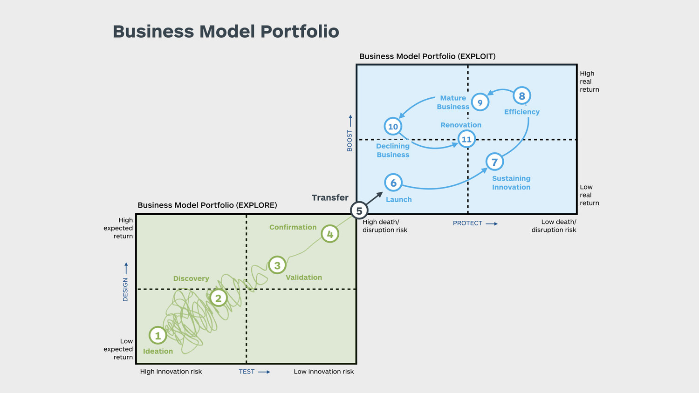

5 AI: Succesfacoren voor strategische implementatie / Roadmap
Succesvol inzetten van AI vraagt méér dan technologie; het vereist een organisatiebrede visie en aanpassing van bestaande werkwijzen. In deze sessie gaan we ontdekken welke voorwaarden moeten worden geschapen op het gebied van cultuur, structuur, systemen en human capital, zodat de AI-strategie succesvol kan worden uitgevoerd.

5.1 Cultuur, Structuur, Systemen én Human Capital
- Cultuur
- Experimenteer en leer: Creëer een veilige omgeving voor pilots en prototypes.
- Samenwerking: Doorbreek silo’s; laat domeinexperts en AI-specialisten elkaars krachten benutten.
- Continue ontwikkeling: Bied (her)scholing voor digitale en AI-vaardigheden.
- Focus op mens + AI: Positioneer AI als aanvulling op menselijk oordeel, niet als vervanging.
- Experimenteer en leer: Creëer een veilige omgeving voor pilots en prototypes.
- Structuur
- Wendbaar organiseren: Vermijd starre hiërarchieën, werk in multidisciplinaire teams.
- Centraliseer AI-kennis: Richt een AI-center of excellence in om standaarden te borgen.
- Data als ruggengraat: Bouw een infrastructuur die schone, goed georganiseerde data garandeert.
- Wendbaar organiseren: Vermijd starre hiërarchieën, werk in multidisciplinaire teams.
- Systemen & Governance
- Technologische basis: Investeer in schaalbare AI-platforms en tooling.
- Naadloze integratie: Zorg dat AI-oplossingen onderdeel worden van dagelijkse processen en besluitvorming.
- AI-governance: Waarborg ethiek, privacy en transparantie in alle AI-toepassingen.
- Technologische basis: Investeer in schaalbare AI-platforms en tooling.
- Human Capital
- Vaardigheden en upskilling: Schenk aandacht aan het ontwikkelen van nieuwe competenties, zoals data-analyse, AI-ethiek en samenwerking tussen mens en machine.
- Verandermanagement: Neem medewerkers mee in het proces en zorg dat zij de toegevoegde waarde van AI begrijpen.
- Werving en behoud: Trek talent aan dat AI-innovaties kan vormgeven én implementeren, en stimuleer een cultuur van continue professionele groei.
- Vaardigheden en upskilling: Schenk aandacht aan het ontwikkelen van nieuwe competenties, zoals data-analyse, AI-ethiek en samenwerking tussen mens en machine.
Het succes van AI staat of valt met de manier waarop mensen en teams ermee leren werken en hoe goed de organisatie is ingericht om van data naar besluitvorming te gaan.

In deze sessie zullen we het Business Model Portfolio raamwerk hanteren:
- Explore
- Visie formuleren: Bepaal hoe AI bijdraagt aan de bedrijfsstrategie.
- Kansen identificeren: Onderzoek zowel interne capaciteiten (data, human capital) als externe markttrends.
- Visie formuleren: Bepaal hoe AI bijdraagt aan de bedrijfsstrategie.
- Transfer
- AI-capaciteiten ontwikkelen: Bouw prototypes, leg AI-standaarden vast en form de juiste teams.
- Klantwaarde en winst verhogen: Gebruik AI om waardeproposities te verbeteren en operationele kosten te verlagen.
- AI-capaciteiten ontwikkelen: Bouw prototypes, leg AI-standaarden vast en form de juiste teams.
- Exploit
- Integratie in workflows: Zorg dat AI-oplossingen onderdeel worden van dagelijkse processen en besluitvorming.
- Schaalbaarheid en optimalisatie: Borg de governance en blijf continu verbeteren om AI op grotere schaal te benutten.
- Integratie in workflows: Zorg dat AI-oplossingen onderdeel worden van dagelijkse processen en besluitvorming.
Door deze fasen systematisch te doorlopen, leert u niet alleen nieuwe AI-initiatieven op te zetten, maar deze ook succesvol te verankeren in uw organisatie.
Doel van de sessie:
Stap voor stap een AI-roadmap ontwikkelen, gebaseerd op de fasen Explore, Transfer, Exploit. Deelnemers maken voor hun eigen organisatie een eerste opzet van een end-to-end AI-strategie.
Tijd: 60 minuten
Werkwijze:
- Introductie (5 minuten)
- Uitleg van de Explore → Transfer → Exploit-aanpak.
- Voorbeelden benoemen van AI-projecten die deze route succesvol hebben doorlopen.
- Uitleg van de Explore → Transfer → Exploit-aanpak.
- Station 1: Explore (15 minuten)
- Deelnemers vormen kleine groepjes (3-4 personen).
- Identificeer 2-3 AI-kansen (use-cases) die aansluiten bij de organisatiedoelen. Denk aan gebruik van data, klantbehoeften of markttrends.
- Noteer kort de businesswaarden en beoogde impact: Waarmee kunnen we het meeste verschil maken?
- Deelnemers vormen kleine groepjes (3-4 personen).
- Station 2: Transfer (15 minuten)
- Schuif door naar de volgende tafel of flip-over.
- Per use-case: wat is nodig om van concept naar werkende AI-oplossing te gaan?
- Teams en middelen: Welke expertises zijn vereist? Hoe vorm je de juiste multidisciplinaire teams?
- Prototypes: Welke MVP’s/proofs of concept kun je snel testen?
- Standards & governance: Welke richtlijnen (privacy, ethiek) moet je meteen meenemen?
- Schuif door naar de volgende tafel of flip-over.
- Station 3: Exploit (15 minuten)
- Opnieuw doorwisselen.
- Plan de grootschalige uitrol van de gekozen oplossing. Denk aan:
- Integratie in workflows: Hoe borg je dat AI onderdeel wordt van dagelijkse besluitvorming?
- Rollen & verantwoordelijkheden: Wie is eigenaar in de beheerfase?
- Continu verbeteren: Hoe evalueer en optimaliseer je periodiek?
- Opnieuw doorwisselen.
- Presentaties en Reflectie (10 minuten)
- Elk groepje presenteert de hoofdlijnen van hun uitgewerkte roadmap.
- Korte feedback en tips van de andere groepen.
- Elk groepje presenteert de hoofdlijnen van hun uitgewerkte roadmap.
Verwachtingen voor jullie als deelnemers:
- Maak een eerste schets van de AI-roadmap die aansluit bij de behoeften van je eigen organisatie.
- Breng een duidelijke focus aan: welke AI-kansen pak je nu eerst op, en welke komen later?
- Wees bereid om je plannen te delen met andere groepen en actief feedback te geven én ontvangen.
Doel van de sessie:
Deelnemers maken een visuele weergave (poster) van hun AI-roadmap. Via peer feedback scherpen zij hun strategie aan en leren zij van elkaars plannen.
Tijd: 45 minuten
Werkwijze:
- Introductie en uitleg (5 minuten)
- Laat zien hoe een ‘roadmap-poster’ eruit kan zien. Denk aan een tijdbalk met mijlpalen of een canvas met pijlers (Explore, Transfer, Exploit).
- Vertel dat de nadruk ligt op duidelijkheid en prioriteiten.
- Laat zien hoe een ‘roadmap-poster’ eruit kan zien. Denk aan een tijdbalk met mijlpalen of een canvas met pijlers (Explore, Transfer, Exploit).
- Posters maken (15 minuten)
- Individueel of per organisatiegroep maakt iedereen een poster van hun AI-roadmap.
- Leg mijlpalen vast op een tijdbalk, van korte-termijndoelen tot langetermijnvisie.
- Benoem cruciale stakeholders, benodigde resources en verwachte resultaten.
- Individueel of per organisatiegroep maakt iedereen een poster van hun AI-roadmap.
- Galerij-wandeling (10 minuten)
- Hang de posters op in de ruimte.
- Deelnemers lopen rond en lezen elkaars posters.
- Gebruik feedback-stickers of post-its met korte opmerkingen (bijv. “Inspirerend!” / “Hoe ga je om met XX?”).
- Hang de posters op in de ruimte.
- Korte Reflectie (10 minuten)
- Postereigenaren beantwoorden vragen en lichten onduidelijkheden toe.
- Waar zie je overeenkomsten tussen verschillende organisaties? Waar zie je unieke invalshoeken?
- Noteer direct eventuele verbeterpunten op je eigen poster.
- Postereigenaren beantwoorden vragen en lichten onduidelijkheden toe.
- Afronding (5 minuten)
- Ieder past waar nodig zijn roadmap-poster aan of noteert opvolgacties.
Verwachtingen voor jullie als deelnemers:
- Wees concreet in wat je op de poster zet: Wat wil je bereiken en waarom?
- Geef elkaar constructieve feedback, ook over mogelijke valkuilen.
- Neem verbeterpunten meteen mee om de roadmap te versterken.
Doel van de sessie:
Identificeren welke risico’s (en bijbehorende kansen) AI-initiatieven kunnen doen mislukken of juist versnellen. Vervolgens formuleren deelnemers strategieën om hiermee om te gaan.
Tijd: 30 minuten
Werkwijze:
- Introductie (5 minuten)
- Uitleg van het concept ‘pre-mortem’: je stelt je voor dat je project is mislukt en verkent waarom het is misgegaan.
- Leg uit dat we ook kijken naar kansen: Welke onverwachte voordelen kunnen zich voordoen?
- Uitleg van het concept ‘pre-mortem’: je stelt je voor dat je project is mislukt en verkent waarom het is misgegaan.
- Groepsopdracht – Pre-mortem en “Opportunity Mapping” (15 minuten)
- Werken in groepjes van 3-4 personen.
- Pre-mortem: Som zo veel mogelijk redenen op waarom de AI-roadmap zou kunnen falen (bijv. gebrek aan datafundament, weerstand van medewerkers, ethische of wettelijke obstakels, enz.).
- Opportunity Mapping: Identificeer per risico ook een potentieel positief scenario: Hoe kan AI voor een ‘game-changer’ zorgen?
- Rangschik risico’s en kansen op urgentie en impact.
- Werken in groepjes van 3-4 personen.
- Plenaire bespreking (5 minuten)
- Ieder groepje deelt één cruciaal risico en één interessante kans.
- Korte discussie: Hoe kun je die risico’s actief mitigeren? Op welke manier kun je de kansen beter benutten?
- Ieder groepje deelt één cruciaal risico en één interessante kans.
- Afronding (5 minuten)
- Schrijf 2-3 acties op die je meteen kunt ondernemen om de belangrijkste risico’s te verkleinen.
- Bewaar deze als checklijst voor je AI-roadmap.
- Schrijf 2-3 acties op die je meteen kunt ondernemen om de belangrijkste risico’s te verkleinen.
Verwachtingen voor jullie als deelnemers:
- Denk scherp na over wat er mis zou kunnen gaan, zowel vanuit technisch, organisatorisch als menselijk perspectief.
- Kom met concrete preventie- of mitigatiestrategieën.
- Besef dat AI ook onverwacht positieve wendingen kan geven; wees alert op ‘onvoorziene’ kansen.
5.2 Aanvullend inspiratiemateriaal
5.2.1 Artikel: Investigating the influence of artificial intelligence on business value in the digital era of strategy.
Dit artikel uit 2023 van Perifanis en Kitsios is een systematische literatuurstudie naar de invloed van kunstmatige intelligentie (AI) op de bedrijfswaarde in het kader van digitale transformatie. De auteurs benadrukken hoe de integratie van AI-capaciteiten met bedrijfs- en IT-strategieën essentieel is om betere resultaten te behalen en digitale transformatieactiviteiten op elkaar af te stemmen. Een kernonderwerp daarbij is ‘AI-ambidexteriteit’: het tegelijkertijd inzetten van zowel routinematige als innovatieve AI-toepassingen als motor voor strategische flexibiliteit. Het onderzoek richt zich erop te begrijpen hoe organisaties AI effectief kunnen inzetten om hun strategische wendbaarheid te vergroten en substantiële bedrijfsvoordelen te realiseren, met bijzondere aandacht voor de rol van verantwoord AI-beheer (Perifanis and Kitsios 2023).
5.2.2 Rapport: Where’s the Value in AI?
Deze bron is waardevol omdat ze rechtstreeks ingaat op de vraag waar AI waarde kan opleveren—iets wat onmisbaar is voor elke AI-strategie. De publicatie wijst erop dat veel organisaties vastlopen in de proof-of-conceptfase en biedt inzichten in hoe AI-koplopers écht waarde uit de technologie halen. De rapportage heeft een praktische insteek, benoemt waar andere bedrijven tekortschieten en geeft suggesties voor verbetering van AI-trajecten. Voor een Masterclass is dit document uitermate geschikt, omdat het een praktische benadering van AI-implementatie geeft met nadruk op waardecreatie (“Where’s the Value in AI?” 2024).
5.2.3 Video: Developing a Gen AI Strategy for your Company
In deze webinar wordt besproken hoe AI-capaciteiten praktisch binnen een bedrijf kunnen worden geïntegreerd. Zo komen de inzet van beeldgeneratie en spraakherkenning aan bod en wordt duidelijk hoe deze tools bedrijfsprocessen kunnen verbeteren. De transcriptie bespreekt ook een bedrijf dat gepersonaliseerde diensten aanbiedt met behulp van AI, wat goed illustreert hoe AI kan bijdragen aan een betere klantervaring. Daarnaast gaat het in op de manier waarop een organisatie AI-native kan worden, in plaats van AI simpelweg toe te passen op bestaande processen. Daarmee biedt deze bron een actueel en praktisch voorbeeld van hoe een organisatie een generatieve AI-strategie kan opstellen. (Digital Data Design Institute at Harvard 2023).
5.2.4 Video: Common business use cases for generative AI
In deze video verkennen experts een aantal praktische toepassingen van generatieve AI in het bedrijfsleven. Ze bespreken use-cases zoals productcatalogisering en klantenservice, en laten zien hoe AI kan worden ingezet om concrete zakelijke uitdagingen op te lossen. De voordelen van samenvattingsfuncties en het belang van experimenteren met AI worden hierbij benadrukt. Daarnaast worden inzichten gedeeld wat betreft de technische aspecten en vereisten voor het implementeren van generatieve AI (Google Cloud 2023).
5.2.5 Video: Never just tech - Unlocking the full value of gen AI
Onderzoek van McKinsey schat dat generatieve AI (gen AI) jaarlijks tot 4,4 biljoen dollar kan bijdragen aan de wereldeconomie. In uiteenlopende sectoren en functies zou gen AI kunnen worden ingezet om bureaucratische processen te verkorten, klantreizen te verbeteren en het proces van coderen en contentcreatie te versnellen. Tijdens een recente editie van McKinsey Live bespraken partner Jessica Lamb en senior partner Gayatri Shenai de potentie van gen AI, de uitdagingen die ermee gepaard gaan en gaven zij bestuurders advies over de integratie van gen AI in hun organisaties. (McKinsey & Company 2024).